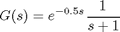
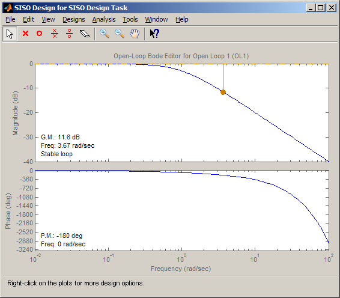
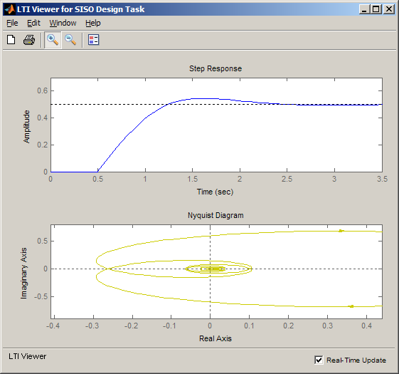
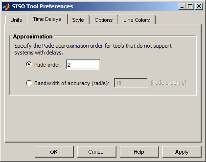
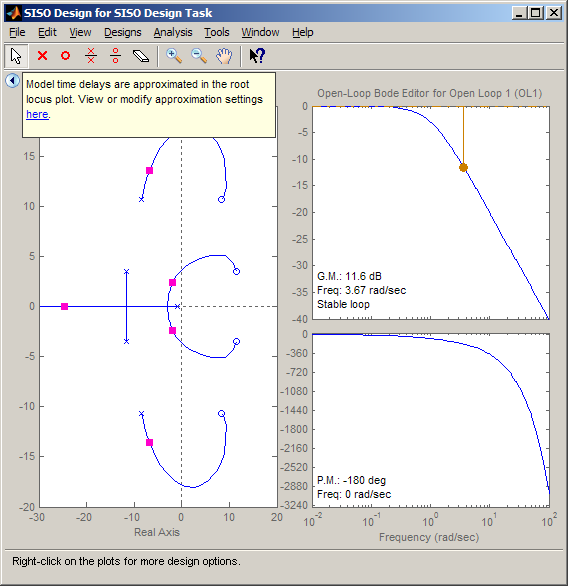

時間遅延を持つプラント モデルの補償器設計
このデモでは、時間遅延を持つプラント モデルに対して使用できる、SISO 設計ツールのさまざまな解析ツールと設計ツールについて説明します。
目次
時間遅延を持つフィードバック システムの解析と設計
ここでは、標準的なフィードバック設定を取り上げます。この設定のプラント モデル

には時間遅延があります。
時間遅延システムで作業する場合は、時間遅延を直接サポートする解析ツールや設計ツールを使用すると、性能と安定性を正確に評価できるので効果的です。ただし、制御設計手法やアルゴリズムの多くは、時間遅延を直接処理できません。一般的な回避策は、パデ近似 (オールパス フィルター) によって遅延を置き換えることです。この近似は低周波数でしか有効でないため、正しい近似の次数を選択して、近似の有効性を確認することが重要となります。
SISO 設計ツールには、さまざまな設計ツールと解析ツールが用意されています。これらのツールの中には、時間遅延を直接サポートしているものもあれば、近似を通じて間接的に時間遅延をサポートしているものもあります。SISO 設計ツールを使用すると、これらのツールを同時に利用できるだけでなく、近似を使用するときに生じる正確性の妥協を可視化することもできます。以下では、SISO 設計ツールにおける時間遅延の使用について概説します。
SISO 設計ツールにおける時間遅延システムの使用
SISO 設計ツールを使用するための第一歩は、プラント モデルを定義して、ツールを起動することです。
>> G = tf(1,[1,1],'InputDelay',0.5);
>> sisotool({'bode'},G)
時間遅延をサポートするツール
時間遅延を直接サポートするツールの例は次のとおりです。
- ボード エディターとニコルス エディター
- 時間応答プロット
- 周波数応答プロット
次の図はボード エディターを示しています。ここでは、応答の位相を調べることにより、遅延の正確な表現に起因するロールオフ効果を確認できます。

次に、下図に示す解析ビューを使用して、閉ループ ステップ応答と開ループ ナイキスト プロットを検証します。これらのプロットは、[解析プロット] タブを使用して設定されます。まず、ステップ応答を評価してみましょう。ステップ応答の初期部分に 0.5 秒の遅延の正確な表現が示されています。次に、ナイキスト プロットの原点付近に注目してください。応答が原点を中心にらせん状に巻いています。これは、時間遅延が正確に表現された結果です。

時間遅延の近似が必要なツール
時間遅延を近似するツールの例は次のとおりです。
- 根軌跡エディター
- 極/零点プロット
- 大半の自動調整法
近似を使用する際の欠点は、結果が正確でなく、近似の有効性に依存するということです。SISO 設計ツールに含まれている各ツールには、ツールによって近似が使用されるときに通知を表示する警告ペインがあります。それでは、これらのツールの一部を検証して、近似設定をどのように変更できるかを見ていきましょう。
まず、根軌跡エディターを検証します。根軌跡エディターを起動するには、[グラフィカルな調整] タブを使用します。根軌跡エディターの上部には、ツールで近似が使用されていることを示す通知が表示されます。左側の折りたたみアイコンをクリックすると、この通知を最小化できます。

近似設定を変更するには、通知エリアのハイパーリンクをクリックして、[SISO 設計ツール設定] ダイアログ ボックスを開きます。このダイアログ ボックスでは、パデ近似の次数を明示的に設定したり、近似を正確にする周波数を指定することによって次数を自動的に計算したりすることができます。

パデ近似の次数を 2 から 4 に変更して [適用] をクリックすると、近似が高次になったために根軌跡エディターでプラントの極と零点の数が増加したことがわかります。

まとめ
SISO 設計ツールには、時間遅延システム向けの設計ツールと解析ツールが用意されています。時間遅延をサポートするツールを使用すると、システムの性能と安定性を正確に解析できます。時間遅延をサポートしないツールでは、時間遅延のパデ近似が使用されます。パデ近似の精度は、SISO 設計ツールの設定を使って指定できます。このように、SISO 設計ツールでは、時間遅延制御システムの詳細を把握し、性能と安定性の評価に対する近似の影響を調べることができます。